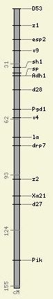
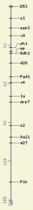
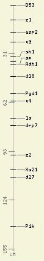
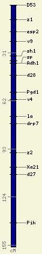
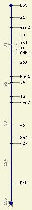
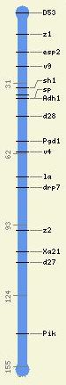
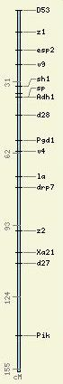
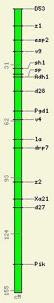

CMap Admin Tutorial: Map Shapes
Index |
Relational Maps >
A map's appearance is primarily determined by its map type; however,
this can be overridden at the map set level. The idea is that the
user should be able to determine the type of map (e.g., genetic,
cytogentic, physical, etc.) from the color and shape, but the curator
should be allowed to make some maps visually distinctive from others
of the same type.
Following are the attributes that you can assign to either a map
type or a map set (via their respective edit pages
in the CMap web admin tool) to alter how the map will appear:
Shape
| Box |
Dumbbell |
I-beam |
|
As the name suggests, this is a box that is filled with the color of
your choice and trimmed in black.
Here is an example of a map with the "box" shape:
|
Here is the same map displayed as a dumbbell.
|
And here is the map as an I-beam. The feature line at the top
obscures the cross bar there, but the bottom one is visible.
|
|

|

|

|
Color
|
You can choose from 140 colors from the pop-up menu on the edit
pages for the map type or map set. Because the "box"
shape is trimmed in black, you can use a light color, but the
"dummbell" and "I-beam" really need darker
colors to stand out against the background. It's wise not to
choose a color too dark for the box, however, or you won't be able
to see very well those features drawn as a "line," e.g.:
|

|
Width
|
You can specify the width of a map from 1-10 pixels. If you choose
nothing, a reasonable default will be used.
|
|
Here's a dumbbell with a width of "1" in
"darkblue."
|
And here it is with a width of "10" in
"cornflowerblue."
|
|

|

|
|
Here's that map as a box with a width of "4" in
"lightblue."
|
And here it is with a width of "10" in "lime."
|
|

|

|
Index |
Relational Maps >